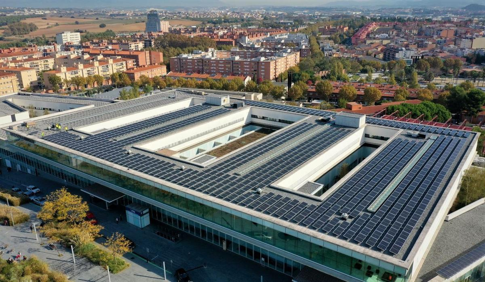
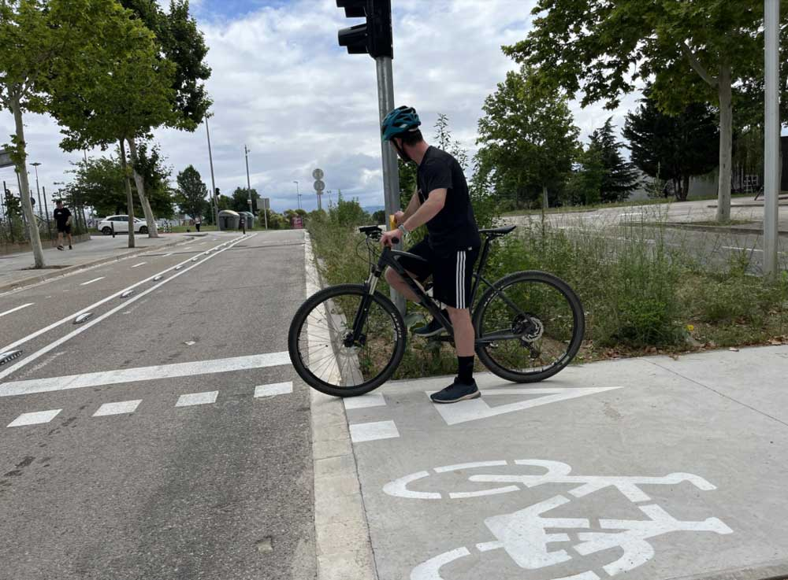
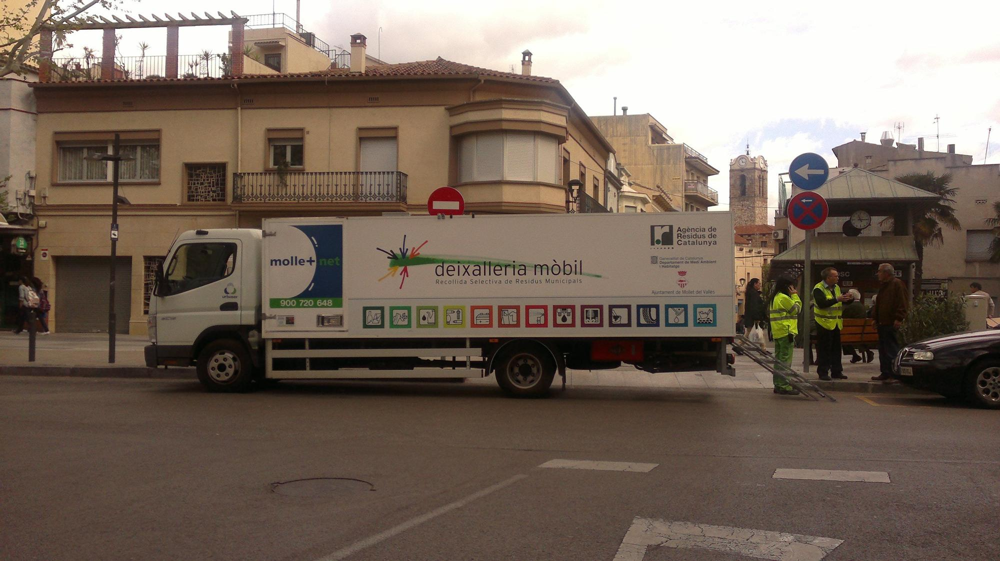

Acciones del Ayuntamiento para proteger el medio ambiente
El Ayuntamiento de Mollet del Vallès aplica diferentes medidas para mejorar la sostenibilidad, reducir la contaminación y promover hábitos responsables entre la ciudadanía.
- Energías renovables: Instalación de paneles solares en edificios municipales.
- Movilidad sostenible: Fomento del transporte público, carriles bici y zonas peatonales.
- Reciclaje: Nuevos puntos de recogida selectiva y campañas de separación de residuos.
- Educación ambiental: Talleres en colegios, charlas y actividades para jóvenes.
- Control de emisiones: Regulación de industrias y vigilancia de la calidad del aire.
- Protección de zonas verdes: Mantenimiento de parques, reforestación y cuidado del arbolado.
Imágenes de las medidas



Ejemplos de acciones medioambientales en la ciudad.
Resumen de medidas
| Medida | Objetivo |
|---|---|
| Energía solar | Reducir consumo eléctrico y emisiones |
| Movilidad sostenible | Disminuir tráfico y contaminación |
| Reciclaje | Reducir residuos y fomentar economía circular |
| Educación ambiental | Concienciar a la población |